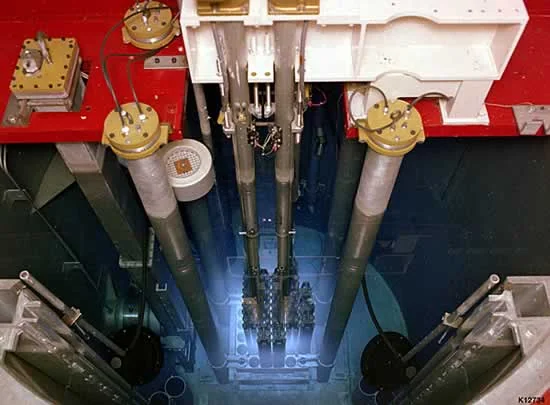
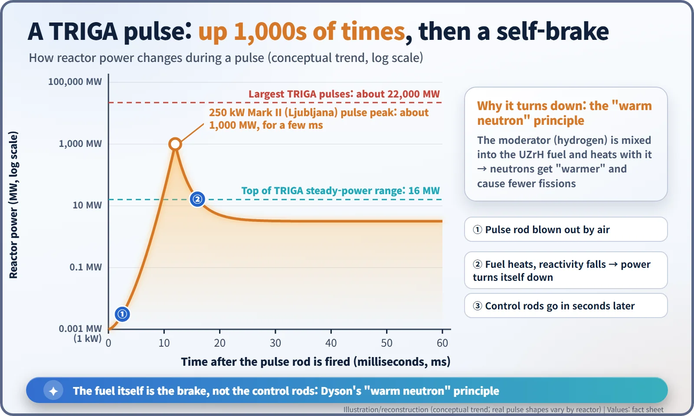
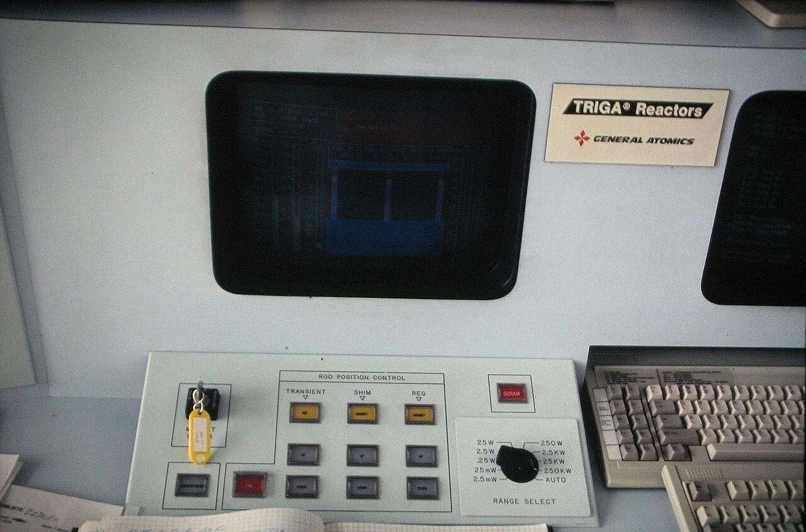
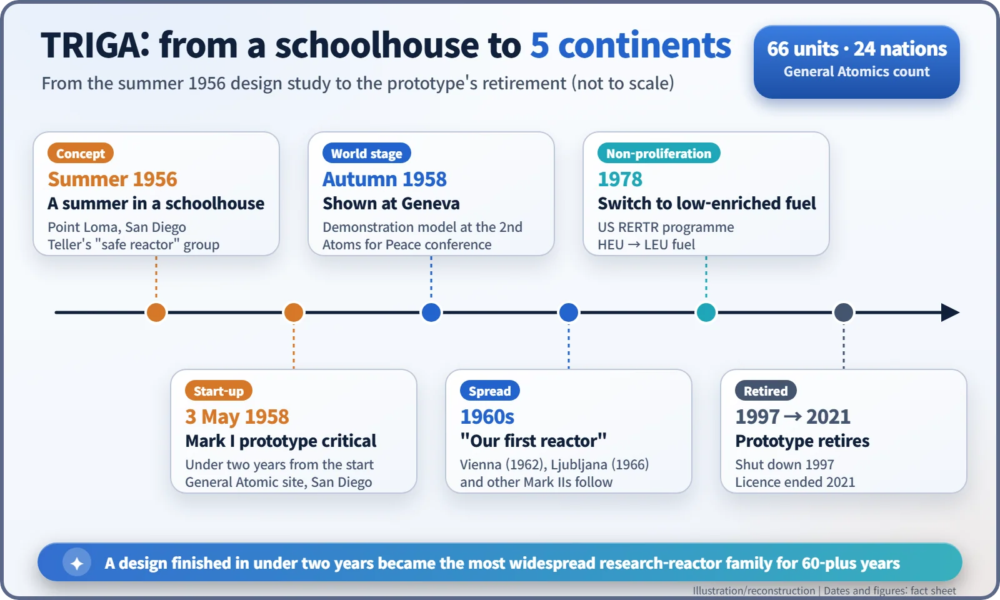

Nuclear History · 217
A Reactor You Could Blow the Rods Out Of? — The History of TRIGA (1956–)
Teller asked for a reactor schoolchildren could not hurt themselves with; Dyson's warm neutron idea put the brake inside the fuel.
In the summer of 1956, in a rented schoolhouse in San Diego, Edward Teller's small team set out to design a reactor that would stay safe even if its operators made mistakes. Freeman Dyson's "warm neutron" idea, hydrogen built into the fuel itself, made it work. The TRIGA prototype went critical on 3 May 1958, and the design went on to be built 66 times in 24 countries.
A brief about dynamite
"Build a reactor that stays safe even if someone bypasses the controls and blows the control rods out with dynamite." That, in essence, was the brief handed out in the summer of 1956 in an old schoolhouse in San Diego, as the physicist Freeman Dyson (1923–2020) later told it. The man who set it was Edward Teller (1908–2003), and by Dyson's account Teller's own test was simpler still: you should be able to let a crowd of schoolchildren into the control room and they still couldn't do any harm. Out of that unusual demand came TRIGA (Training, Research, Isotopes, General Atomics), which went on to become the world's most widespread family of research reactors. [2] [5]
Manhattan Project minds in a borrowed classroom
The first Geneva conference on the peaceful uses of atomic energy, in August 1955, released a flood of once-secret reactor information. The physicist Frederic de Hoffmann (1924–1989) concluded that the age of selling reactors had arrived. He persuaded General Dynamics to set up a nuclear division, General Atomic (GA), and became its first president. [3]
The new company had no proper laboratory yet, so it rented a former schoolhouse in the Point Loma district of San Diego. Dyson later titled the chapter of his memoir about that summer "Little Red Schoolhouse". In the summer of 1956, some 30 to 40 scientists, many of them Manhattan Project veterans, gathered there to weigh three ideas: a ship reactor, a test reactor and a "safe reactor". About ten people worked on the safe reactor under Teller. Dyson did the mathematical theory, Massoud Simnad worked out the fuel chemistry, and Ted Taylor (1925–2004), with Stan Koutz and Andrew McReynolds, handled the detailed design. Sources disagree on who "led" the team; the fairest summary is that Teller framed the problem and Dyson supplied the key idea. [5]
The secret: hydrogen hidden inside the fuel
In most reactors, slow neutrons are much better at splitting uranium than fast ones, so a moderator such as water is used to slow them down. The catch is that if power suddenly surges, the water around the fuel does not heat up straight away, and the neutrons stay "cold" and keep the chain reaction going.
Dyson's answer was to put the moderator inside the fuel. TRIGA fuel is uranium–zirconium hydride (UZrH): uranium alloyed with zirconium metal that has soaked up hydrogen, at roughly 1.6 hydrogen atoms per zirconium atom. When the fuel heats, the hydrogen in it heats almost at once, and neutrons bouncing off that hot hydrogen get "warmer". Warm neutrons cause fewer fissions in the fuel and leak away more easily, so the chain reaction weakens at the very moment power climbs. Dyson called this the "warm neutron principle"; engineers call it a large, prompt negative fuel temperature coefficient. In plain terms, if the operator slips, the fuel itself hits the brakes. [2] [1]

3 May 1958: a prototype in under two years
From idea to hardware took less than two years. The prototype, TRIGA Mark I, first went critical on 3 May 1958 on the General Atomic site in San Diego. Dyson later recalled that at a public demonstration Niels Bohr (1885–1962) pressed the button, and that the reactor shot up to 1,000 megawatts within a millisecond and then shut itself down, with no moving parts. That is his recollection; we have not found a written record of the event, so treat it as a story often told rather than documented fact. [2] [3]
The same self-limiting behaviour lets TRIGA reactors do something unusual: pulse. A pulse rod is blown out of the core by compressed air, power leaps thousands of times over, and within a few milliseconds the heating fuel drags it back down. The Mark II in Ljubljana, Slovenia, which normally runs at 250 kilowatts, reaches about 1,000 MW for a few milliseconds during a pulse; the largest TRIGAs are reported to pulse to about 22,000 MW. Researchers use these brief, intense bursts of neutrons for experiments that need a sharp flash rather than a steady glow. [3] [5]


From Geneva to five continents
At the second Geneva Atoms for Peace conference in September 1958, General Atomic showed a TRIGA demonstration model, and at an agricultural fair in New Delhi in 1959–60 it even demonstrated pulsing. Riding the Atoms for Peace programme, country after country chose a TRIGA as its first reactor: Vienna and Seoul in 1962, Ljubljana in 1966 (first criticality on 31 May) and many more. [3]
TRIGA was originally designed for highly enriched uranium. From 1978, under the US Department of Energy's Reduced Enrichment for Research and Test Reactors (RERTR) programme, operators began converting to low-enriched fuel to reduce proliferation risk. By General Atomics' count, 66 TRIGA facilities have been built in 24 countries on five continents, with steady power levels from 20 kW to 16 MW. [1] [5]

"Can't melt down": how far should we take that?
TRIGA is often marketed as a reactor that cannot melt down. More precisely, within its design limits the fuel itself holds back a sudden rise in power. TRIGAs still have control rods, a scram system and operating rules. The prototype ran until 1997, was decommissioned (its licence was terminated in 2021, according to the US Nuclear Regulatory Commission), and has been named a Nuclear Historic Landmark by the American Nuclear Society. A homework problem set in a borrowed schoolhouse became a design in which the fuel forgives human error, and it has been in use for more than 60 years. [4] [5]